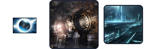
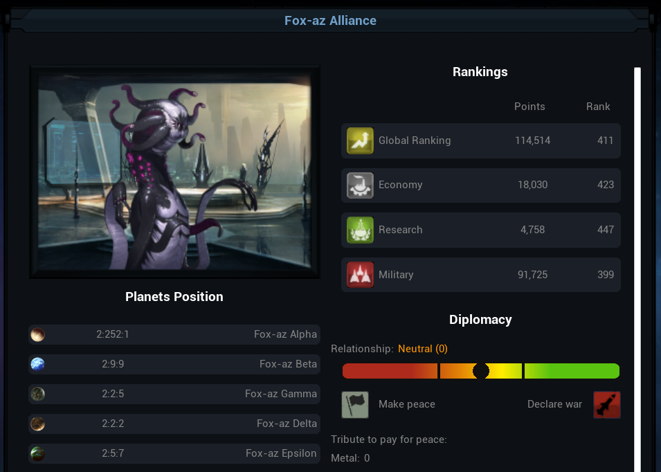
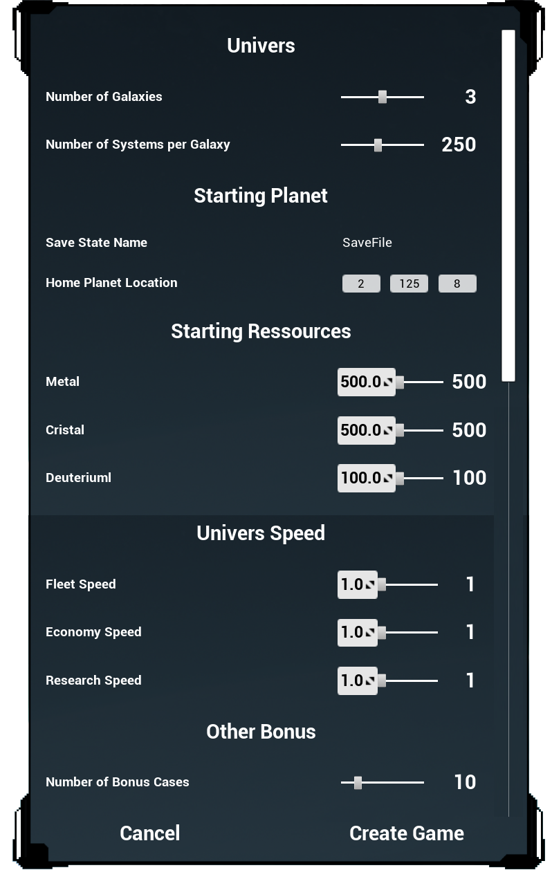

In this section, I will go through features that were already in some way or another in "Ogame" that we reimplemented directly or tweaked to reach our visions.
Removing the Monetization
"Ogame" is heavily monetized and the purpose of it is to give a competitive advantage to the player through extra ressources or perks.
If we wished to get rid of this aspect, some of the perks that arise from the monetization are actully great gameplay feature that westill wanted in the game.
Thus, we tried to incorporate them in the base game in the way that makes sense.

The antimater is the ressource of monetization a player could buy to get advantages.
Instead of removing it altogether we just to keep it and introduce it as a rare late-game ressource that the player can unclock and farm on his worlds.
For this purpose we added a farm and storage building: the Particule Accelerator and Antimatter Tank, respectively.
This way, most the Merchant features (Ressource Market, Scrap Merchant and Import/Export), and the Shop could be kept as in the original game; providing few balancing changes.
Remplacing Players by Bots
"Ogame" is a multiplayer first, and the interactions between players (wars, guilds, cooperations) are a big part of the game.
On the other hand, the fact that another player can totally wipe out your whole fleet while you sleep is a bit overwhealming for casual players.
Thus we decied to remove this PvP altogether and making it a solo game.
The bots were proceduraly generated, along the universe itself, to resemble a distriution that could be observe in a mature "Ogame" universe.
The main lines of this process was to generate a distribution of bots General Points.
Then deduce from it specificities of the empire and associate planets (spread in system close to a "home" planet), fleets (with a scatter depending on an indicator of their agressivness), building, and technologies levels.
All of these were, of course, did in a way it did not break the technology tree of the game.
The name of each empire was randomly generated as well by associating an empire title among 20 (Empire, Union, Federation, Concil...) with the specie's name of the empire.
The specie's name was determined by randomly putting together syllable in a large set. Then a specie sprite was associated with the empire.

Our main goal for a v2.0 would have been to bring the cooperation back by making it a multiplayer cooperative game again, or at least to add more cooperative features with the bots such as trades and alliances.
A Proceduraly Generated Universe

The game universe is proceduraly generated at the start of a new game according to a set of adjustable parameters.
For example the player can chose the number of galaxies, and the number of system per galaxy.
Picking a too high number can however lead to a higher loading time when logging back in a game (that is when al the uptdate of what happened when the player was away takes place).
The player can also chose his home planet. In the game not all planet are equal: some gives you more of one kind of ressources, others are smaller/larger than average.
This option can give the player a different taste to a new game; picking a planet in position 1 (the closest to the star) or 15 (on the edges of the systeme) could be quite challenging.
The game is quite slow in its default settings: count roughly 4-6 months to reach the late game, and over a year to climb to rank 1 of the galaxy.
Thus, we added the possibility for the player to change the speed of the game in case he wishes to develop faster (such as in the SpaceWars browser game were these kind of paramaters are turn all the way up).
Then, we added an option in a "Other Bonus" so the player can tweak his experience to his liking. This section was in particular meant to be fill in later updates of the game.
The game was developped for French and English speaker, and the language can be changed in game at any time.
Fun fact: I re-implemented a localisation system from scratch for this game, and I learned few months after the end of the project that Unreal Engine has, obviously, a pre-implemented localisation sytem easy (and easier) to use.